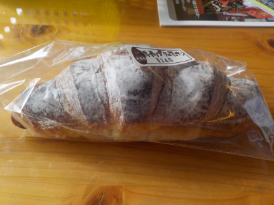
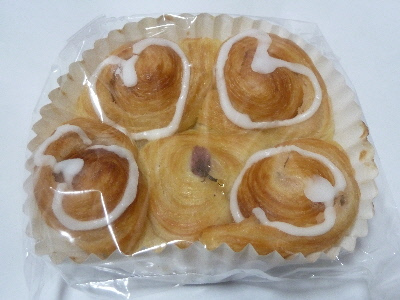
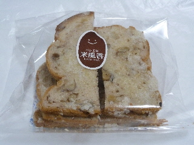
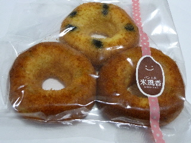
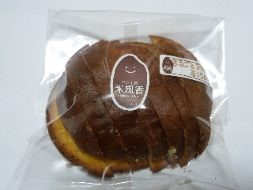

米風香のホイップクロワッサンはもっちりでした。
2019/10/22
パッと見クロワッサンですけど、よーく見るとクロワッサンじゃないですね。

米粉パンでクロワッサンは無理なのかな？
パンは米粉らしくもちもちしてました。甘いホイップクリームと相性がよく、美味しかったです。
普通のクロワッサンだと水分でぺっちゃりしちゃうと思うので、これはこれでいい商品かなと思いました。
島根県雲南市大東町飯田41-12
2019/10/22
パッと見クロワッサンですけど、よーく見るとクロワッサンじゃないですね。

米粉パンでクロワッサンは無理なのかな？
パンは米粉らしくもちもちしてました。甘いホイップクリームと相性がよく、美味しかったです。
普通のクロワッサンだと水分でぺっちゃりしちゃうと思うので、これはこれでいい商品かなと思いました。
2018/03/24
川津桜を見た帰りにパン屋さんに寄りました。

さくら餡が入ったデニッシュパンです。
パンの形が凝っていますね。
あんパンのように餡がたくさん入っていないので、デニッシュパンの味が楽しめました。
2014/11/12
砂糖たっぷりのラスクですね。
パンに白い膜が出来ていますね。

でも意外と砂糖味が強くなかったです。
パンの味もバターの味もして美味しかったです。
2014/05/24
焼きドーナッツの３個セットです。
黒豆、栗、さつまいもの3種類です。
パックしてあるので、日持ちがいいです。

米風香さんの商品なので、米粉が入っています。
食べた感じは普通の焼きドと違わない気がしました。
それぞれ中に具が入っているので、ドーナッツだけじゃない味と食感が楽しめていいですね。
私は黒豆が一番すきかな。
栗とサツマイモは甘露煮が入っているので似た感じの味だなーって思いました。
色んな味が増えるといいですね。
2013/10/28
パンがまるごとラスクになっています。

まるごとなので、火の入り加減が良くないんじゃないの？とか思ったんですが、めちゃくちゃいいです。
パンが凄く均一に出来てて、全部がサクサクでした。
うまく出来るもんですねー。
たたらば壱番地に寄ったときによく買います。